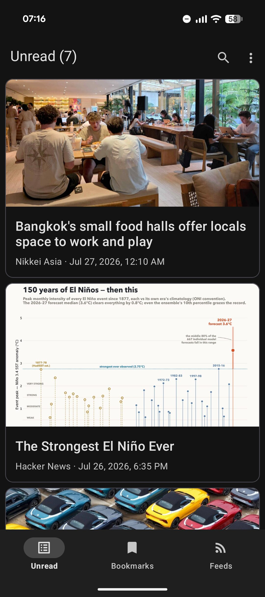

No gatekeepers
Follow publishers directly through open RSS and Atom standards, instead of relying on a social platform to decide what reaches you.
Social platforms put ads, algorithms, and gatekeepers between publishers and their audience. Vesti brings RSS and Atom feeds back to their original promise: simple, direct publishing for everyone.

You can access all the cutting-edge but unreleased features, and also join our Matrix Space to connect, help, leave your feedback, and shape the direction of the project.
Download Nightly APKFollow publishers directly through open RSS and Atom standards, instead of relying on a social platform to decide what reaches you.
Read without ad-heavy timelines, engagement loops, fake news, or propaganda competing for your attention.
Vesti is built and primarily maintained by its creator as a small, open source project for people who value a freer web.
A handful of independent, ad-free publications worth subscribing to. Add them to Vesti and skip the algorithm entirely.
The fifteen latest Standard Ebooks, most-recently-released first.
A news feed with beautiful images that translates Asian and Chinese perspectives on world events — a useful counterbalance to BBC and Guardian-style publications.
Random tech-related news with funny comments from the Hacker News community.
Updates from the official Mastodon account on mastodon.social. You can subscribe to any Mastodon account as an RSS feed — something you cannot do with Twitter.
Updates from the official Bluesky account — another solid Twitter alternative with full webfeed support for individual accounts.